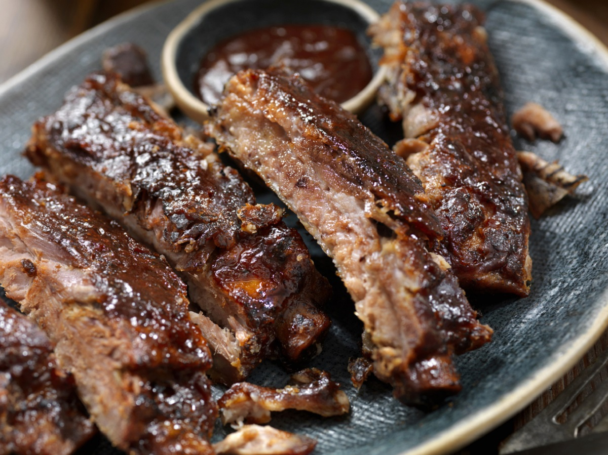
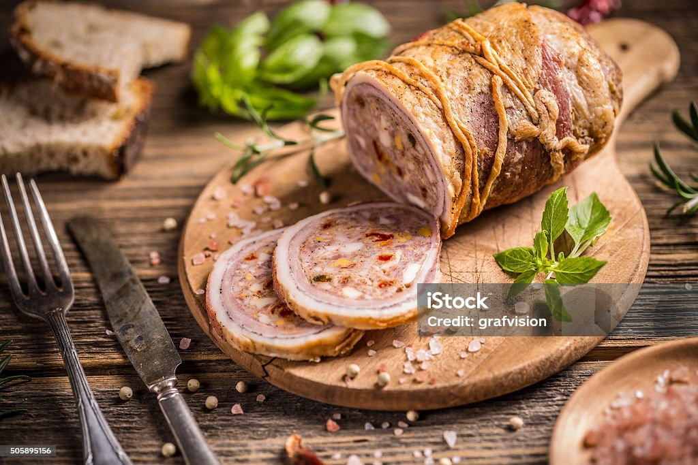

Costelinha.

Ingredientes (3 porções):
- 1 kg de costelinha de porco;
- 1/2 limão;
- 1 xícara de ketchup;
- 1/2 xícara de mostarda escura;
- 1/2 copo de vinagre;
- 1 colher de sopa de açúcar;
- Sal e pimenta do reino a gosto;
- Óleo.
Modo de preparo (1h:30min):
- Em uma panela de pressão, coloque 3 colheres de sopa de óleo;
- Coloque a peça de costelinha meio "dobrada" para que caiba dentro da panela;
- Por cima, coloque o catchup, mostarda, pimenta, sal, açucar e vinagre;
- Acrescente dois copos de água, tampe a panela e cozinhe por aproximadamente 50 minutos;
- Retire da panela de pressão com cuidado para não desmanchá-la;
- Coloque a peça em uma assadeira untada, regue com o molho ou acrescente mais molho barbecue;
- Leve ao forno alto até que fique com a crosta crocante;
- Pronto. Pode se servir.
Lasanha de frango.

Ingredientes (15 porções):
- 500 g de massa de lasanha;
- 500 g de frango desfiado;
- 1 caixas de creme de leite;
- 3 colheres de manteiga;
- 500 g de presunto;
- 500 g de mussarela;
- Sal a gosto;
- 1 cebola ralada;
- 3 colheres de óleo;
- 1 caixa de molho de tomate;
- 3 dentes de alho amassados.
Modo de preparo (50min):
- Cozinhe a massa segundo as orientações do fabricante, despeje em um refratário com água gelada para não grudar e reserve;
- Refogue o alho, a cebola, o frango desfiado, o molho de tomate e o creme de leite, deixe cozinhar por 3 minutos e reserve;
- Despeje uma parte do molho em um refratário, a metade da massa, a metade do presunto, a metade da mussarela e o restante da massa;
- Repita as camadas até a borda do recipiente;
- Leve ao forno alto (220° C), preaquecido, por cerca de 20 minutos;
- Agora é só se servir.
Pernil assado com batata.

Ingredientes:
- 2,5 kg de pernil;
- 1 copo de vinagre branco;
- 1 pimentão verde;
- 1/2 xicara de suco de limão;
- 1/2 xícara de azeite;
- 2 cebolas médias;
- 6 dentes de alho;
- 2 cubos de caldo de carne;
- 1 xícara de água;
- 6 batatas médias;
- Pimenta-do-reino a gosto;
- sal a gosto.
Modo de preparo (14h:30min):
- Coloque o pernil em uma vasilha onde as bordas sejam maiores que a altura do mesmo;
- Jogue o vinagre sobre o pernil, reserve;
- Bata no liquidificador o pimentão, o limão, o azeite, a cebola, o caldo de carne, o sal, a pimenta-do-reino e a água, bata até formar uma pasta;
- Reserve;
- Lave o pernil com água corrente para retirar o vinagre. Dê diversos furos com faca no pernil;
- Jogue a pasta sobre o pernil, o tempero deverá cobrir toda a peça da carne;
- Reserve por 12 horas em geladeira com a vasilha coberta, de preferência com filme plástico;
- Leve ao forno por 1 hora com papel-alumínio a carne com um pouco do tempero usado (a carne já deve estar no ponto de cozimento e com um pouco de caldo);
- Depois desse tempo, coloque as batatas e leve para assar por mais 30 minutos, ainda com papel alumínio;
- Após, retire o papel-alumínio e deixe no forno para dourar por, mais ou menos, mais 1 hora. O tempo de cozimento pode variar de acordo com a potência do forno;
- Pronto. Após essa logo demora pode se servir.
Rocambole de carne moída.

Ingredientes (8 porções):
- 1/2 kg de carne moída;
- 1 pocote de sopa de cebola;
- presunto fatiado;
- queijo fatiado;
- tempero verde;
- sal a gosto;
Modo de preparo (50min):
- Tempere a carne moída com a sopa de cebola, o tempero verde e o sal;
- Coloque a carne temperada sobre uma folha de papel laminado ou papel manteiga e abra a massa com um rolo, na espessura de 1 cm, mais ou menos;
- Forre a carne com o presunto e o queijo, pode-se colocar também milho verde, ervilha e requeijão;
- Enrole a carne, com ajuda da folha de papel laminado ou manteiga, em forma de rocambole;
- Leve ao forno, em temperatura alta, por mais ou menos 30 minutos, ou no microondas por 15 minutos;
- Bom apetite!
strogonoff de frango.

Ingredientes (8 porções):
- 1 peito de frango;
- 3 cebolas médias;
- Sal a gosto;
- Pimenta-do-reino a gosto;
- 2 latas de creme de leite;
- 3 tomates picados sem pele e sem sementes;
- 3 colheres de sopa de óleo de oliva;
- 2 colheres (sopa) de ketchup;
- 1 cubo de caldo de carne dissolvido em 100 ml de água
Modo de preparo (30min):
- Em uma panela, adicione o óleo, a carne, a cebola, os tomates, o caldo de carne e deixe cozinhar por 20 minutos;
- Acrescente o ketchup e o champignon e deixe cozinhar até obter um molho consistente e cremoso;
- Desligue o fogo e acrescente o creme de leit;
- Mexa até incorporar o molho ao creme;
- Coloque em uma forma refratária e decore com tempero e batata palha.
- Agora se seirva com arroz (opcional).